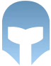
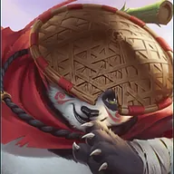
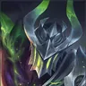
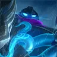
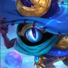
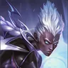

Você já perdeu a partida no draft?
Você escolhe seu herói e antes mesmo da partida começar já descobre que o time inimigo tem o counter perfeito contra ele.
Saber qual herói escolher decide boa parte do jogo antes mesmo de ele começar. Ganhe a partida com a escolha certa.
Como funciona
Três toques até a resposta
- Busque o herói pelo nome.
- Toque nele para abrir a ficha.
- Veja contra quem ele é forte e contra quem é fraco.

Akai
TanqueÉ forte contra
Akai leva vantagem contra estes heróis
-
GuinevereLutador
-
EudoraMago

ArgusLutador
AtlasTanque-
AlucardLutador · Assassino
É fraco contra
Estes heróis levam vantagem contra Akai
-
EsmeraldaMago · Tanque
-
AliceMago · Tanque
-
HanabiAtirador

CyclopsMago
KarrieAtirador
Por que usar
Feito para quem joga
-
133 heróis
Todos os heróis do jogo, com counters a favor e contra.
-
Funciona offline
Depois de aberto uma vez, funciona sem internet.
-
Grátis
Sem anúncios e sem pagar nada.
-
Sem cadastro
Abriu, usou. Nada de conta, e-mail ou senha.
-
Português e inglês
Troque o idioma quando quiser, nas configurações.
Perguntas frequentes
Tire suas dúvidas antes de baixar
É grátis mesmo?
Sim. Não tem versão paga, assinatura nem cadastro.
É seguro instalar o APK?
Sim. O código do app é aberto e qualquer pessoa pode ver no GitHub. O Android mostra um aviso porque o app não vem da Play Store, e isso é normal para qualquer APK baixado fora dela.
Como instalo o APK?
- Toque em "Baixar APK".
- Abra o arquivo baixado.
- Se o Android pedir, permita "instalar apps desta fonte".
- Toque em "Instalar".
Tenho iPhone. Funciona?
Sim, pela versão web. Abra o app no Safari, toque em Compartilhar e depois em Adicionar à Tela de Início. Ele vira um ícone como qualquer outro app.
Precisa de internet?
Só para baixar ou abrir pela primeira vez. Depois disso, funciona offline.
E se um counter estiver errado?
Mande pela tela de Feedback, no menu do app. É assim que a lista melhora.
É um app oficial do Mobile Legends?
Não. É um projeto de fã, sem vínculo com a Moonton.
Pronto para o próximo draft?
Grátis, sem cadastro e funciona até sem internet.
Tem iPhone? Toque em "Abrir o app" e adicione à tela de início.